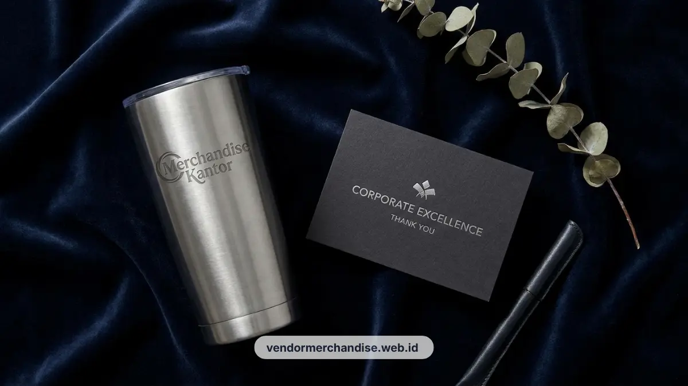

Tumbler stainless custom logo perusahaan adalah wadah minum berbahan stainless steel yang dicetak logo brand sebagai merchandise kantor untuk karyawan maupun relasi bisnis. Vendor Merchandise Kantor menyediakan berbagai kapasitas dan teknik cetak untuk kebutuhan ini.
Kenapa Tumbler Jadi Merchandise Terpopuler
Tumbler menjadi merchandise terpopuler karena fungsinya dipakai setiap hari sehingga logo perusahaan terus terlihat oleh pengguna maupun orang di sekitarnya. Frekuensi pemakaian yang tinggi membuat exposure brand jauh lebih optimal dibandingkan merchandise sekali pakai.
Banyak perusahaan kini juga mendorong pengurangan penggunaan gelas plastik sekali pakai di lingkungan kerja, sehingga tumbler custom logo sekaligus menjadi bagian dari kampanye keberlanjutan internal.
Karyawan aktif yang bekerja di lapangan maupun kantor sama-sama membutuhkan wadah minum praktis, menjadikan tumbler pilihan merchandise yang relevan untuk hampir semua divisi.
Selain untuk karyawan, tumbler custom logo juga sering dipakai sebagai souvenir event perusahaan seperti gathering tahunan, seminar internal, atau penghargaan kinerja karyawan.
Jenis Material dan Kapasitas
Material stainless steel food grade dengan lapisan insulasi ganda merupakan pilihan paling umum untuk tumbler korporat karena mampu menjaga suhu minuman lebih lama. Kapasitas yang tersedia berkisar dari 350 ml untuk penggunaan ringan hingga 750 ml untuk kebutuhan aktivitas luar ruangan.
Tumbler dengan insulated wall ganda cocok digunakan oleh karyawan yang sering beraktivitas di luar kantor karena mampu mempertahankan suhu dingin maupun panas dalam waktu lebih lama dibandingkan tumbler berdinding tunggal.

Untuk kebutuhan gift set relasi bisnis, kapasitas 500 ml umumnya menjadi pilihan paling seimbang antara portabilitas dan fungsi.
Pemilihan material stainless steel juga membuat tumbler lebih tahan benturan dibandingkan bahan plastik, sehingga usia pakainya bisa bertahan lebih lama sebagai merchandise kantor.
Teknik Custom Logo yang Awet
Teknik laser engraving dan sablon UV merupakan dua metode custom logo yang paling direkomendasikan karena hasil cetakan tidak mudah pudar meski tumbler sering dicuci. Pemilihan teknik disesuaikan dengan jenis permukaan tumbler dan kompleksitas desain logo.
Laser engraving menghasilkan logo yang terukir langsung pada permukaan stainless sehingga tahan lama dan memberi kesan elegan, cocok untuk logo dengan detail garis sederhana. Sementara sablon UV lebih fleksibel untuk logo full color dengan gradasi warna, dan tetap tahan gesekan dalam pemakaian sehari-hari.
Sebelum produksi massal, disarankan meminta contoh sampel cetak logo terlebih dahulu untuk memastikan hasil akhir sesuai dengan brand guideline perusahaan.
Rekomendasi Warna Sesuai Brand
Warna tumbler sebaiknya disesuaikan dengan warna identitas korporat agar merchandise terlihat konsisten dengan citra brand perusahaan. Warna netral seperti hitam matte dan putih glossy umumnya menjadi pilihan aman yang mudah dipadukan dengan berbagai desain logo.
Untuk perusahaan yang ingin tampil lebih mencolok, warna korporat seperti biru navy, merah maroon, atau hijau tua juga tersedia sebagai opsi kustomisasi.
Kombinasi warna tumbler dengan warna kemasan turut memperkuat kesan branding yang menyeluruh saat tumbler diberikan sebagai bagian dari koleksi produk merchandise kantor atau gift set korporat eksklusif.

Pesan Tumbler Custom Logo Sekarang
Vendor Merchandise Kantor siap memproduksi tumbler stainless custom logo perusahaan Anda dengan pilihan kapasitas, warna, dan teknik cetak sesuai kebutuhan brand.
Layanan pemesanan tersedia untuk pengiriman ke Surabaya dengan estimasi produksi yang jelas. Hubungi Vendor Merchandise Kantor sekarang untuk konsultasi desain dan penawaran harga tumbler custom logo perusahaan Anda.